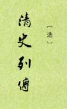

| 史书 > |
| 清史列传（选编） |
| 编撰： 不题撰人 |
|
清史列传，八十卷，清朝人物传记，不题撰人，当是《清史稿》统稿之前分类汇编的资料（所谓“长编”之类）。收录自清朝开国功臣费英东﹑额亦都起，直至清末李鸿章等为止的2894篇传记，其根据大多出自清国史馆《大臣列传稿本》﹑《满汉名臣传》和《国朝耆献类征初编》。于1928年由中华书局印行，后经校点，分八册再版。 卷目列宗室王公三卷，大臣划一传档正编二十二卷，大臣传次编十卷，大臣传续编九卷，大臣划一传档后编十二卷，新办大臣传五卷，已纂未进大臣传三卷，忠义传一卷，儒林传四卷，文苑传四卷，循吏传四卷，贰臣传二卷，逆臣传一卷。 此本选116传。（2023-3-26，独孤氏整理，初校） |
 |
|